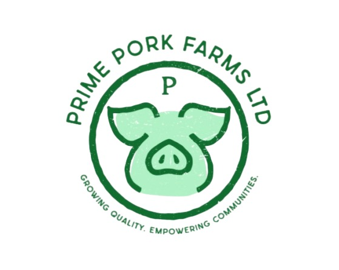

Seven Years of Mentorship
Began teaching English to fellow Burundian refugee students, helping them transition from the French education system to the English curriculum, a seven-year commitment to mentorship that shaped my belief in education as opportunity.

Associate of Science, Business Administration: University of the People
Conferred with Honors in the City of Pasadena, California, my first formal credential in business administration, laying the academic foundation for everything that followed.

Mastercard Foundation Scholar: USIU-Africa
Selected as a Mastercard Foundation Scholar to pursue a BSc in International Business Administration (Accounting Concentration) at United States International University – Africa, Nairobi, Kenya.

Family Father, Jomo Kenyatta Family
Appointed to lead and mentor a community of more than 70 Mastercard Foundation Scholars, coordinating peer support, welfare, and community initiatives throughout their university journey.

Dean's List & Top Tutor Recognition
Earned inclusion on the USIU-Africa Dean's List for excellent academic performance, and recognized as a Top Tutor by the Placement & Career Services (PACS) for supporting fellow students academically.


CHOGM Rwanda 2022 Delegate Experience
Participated in the Commonwealth Heads of Government Meeting (CHOGM) in Rwanda, gaining exposure to global leadership, policy dialogue, and international networking.

Ubuntu.Lab Transformative Leadership Programme
Completed an intensive online-offline leadership programme in partnership with the Mastercard Foundation, strengthening my capacity for transformative, values-based leadership.

Amahoro Coalition Fellowship — Cohort 4
Selected into the competitive Amahoro Coalition Fellowship, representing Rwanda under the theme "Growing Farms, Creating Futures." Completed intensive onboarding and led the Mahama Tailoring Empowerment Project (M-TEP).


Mahama Tailoring Empowerment Project (M-TEP)
Designed and implemented a project equipping vulnerable youth and women in Mahama Refugee Camp with tailoring skills, promoting livelihoods and economic self-reliance.


Michigan State University Collaborative Research
Contributed to a collaborative academic research project with Michigan State University, exploring the relationship between student academic performance and the Blackboard Learning Management System.

Millennium Fellowship: "Soles for Success"
Implemented my Millennium Fellowship project, in partnership with the United Nations Academic Impact and the Millennium Campus Network, at Narindi School, demonstrating leadership, teamwork, and community engagement.


USIU-Africa Transformative Leadership Training
Completed The Transformative Leadership Training at USIU-Africa, delivered in partnership with the Mastercard Foundation and VS Management & Consulting.

Global Mentorship Initiative: Career Readiness Program
Completed the GMI Career Readiness Mentorship Program with the Global Mentorship Initiative, sharpening my professional mentorship and career-navigation skills.

USIU-Africa EDGE Leadership Program — Cohort 2
Graduated from the EDGE Leadership Program, a holistic student development initiative at USIU-Africa designed to maximize leadership potential.


Aspire Leaders Program: Harvard Business School Affiliated
Completed all modules of the 2025 Aspire Leaders Program, a 40-hour leadership curriculum led by Harvard Business School and Harvard University faculty, strengthening critical thinking, communication, and social impact orientation.

University of Oxford – Refugee & Forced Migration Studies
Successfully completed the RLRH Foundations: Refugee and Forced Migration Studies programme offered by the Refugee-Led Research Hub at the University of Oxford, strengthening my understanding of refugee leadership, policy, and forced migration.

Amahoro Coalition Fellowship – Cohort 4
Selected for the Amahoro Coalition Fellowship Cohort 4 as the Founder of Prime Pork Farms Ltd, recognizing entrepreneurial leadership and community-driven innovation. Through the fellowship, I am strengthening my venture-building, leadership, and business development skills while scaling sustainable impact in refugee and host communities.
Prime Pork Farms Ltd – SEF 2.0 Community Action Award
Prime Pork Farms Ltd received $3,000 through the Mastercard Foundation SEF 2.0 Community Action Award to scale sustainable pig farming, strengthen food security, create youth employment, and expand community impact across refugee and host communities.

Completing My IBA Degree
Continuing my BSc in International Business Administration (Accounting) while advancing through the ACCA qualification, with the long-term goal of pursuing graduate study and scaling community-impact ventures.